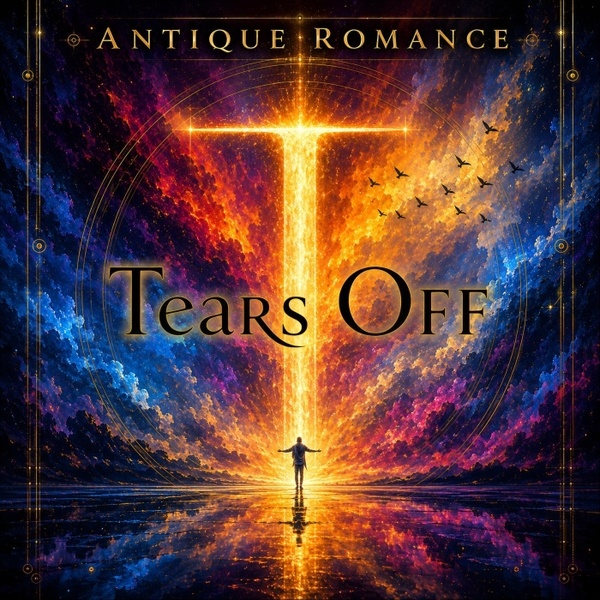
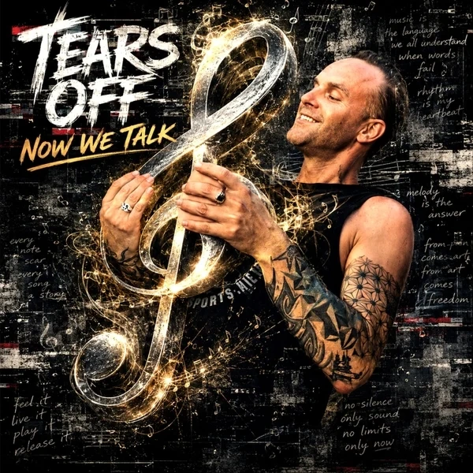
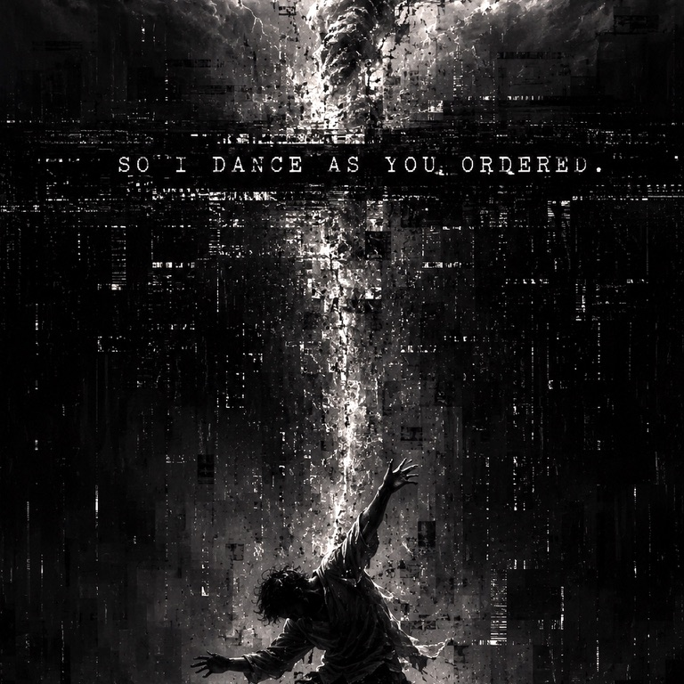
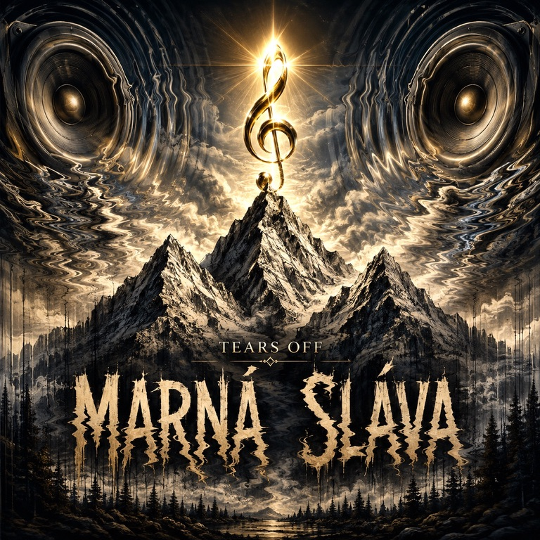
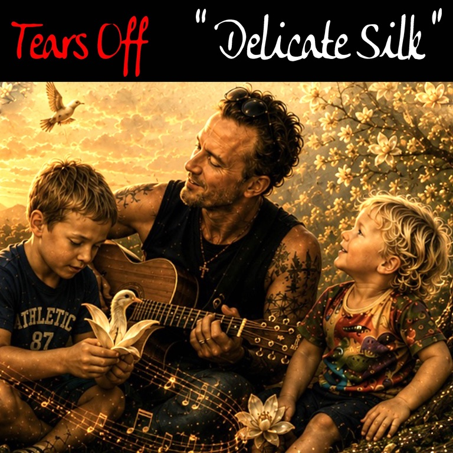

Antique Romance
Tears Off · Marek Šniager
MAREK ŠNIAGER / Tears Off
A collection of songs made of life experiences, full of ups and downs.
Discover the Artist
My name is Marek Šniager.
I make music alongside the work that has shaped so much of my life, the tattoo journey of Tears Of Fenix Tattoo Studio.
Music has always been an important part of my creative life — another way to hold a feeling, tell a story, or leave a little space for silence and to have a perfect dance.
These songs are offered with gratitude to the clients, friends, and people who have been part of my tattoo journey over the years.
Thank you and enjoy my music.
Five releases, presented in the order they were made.

Tears Off · Marek Šniager

Tears Off · Marek Šniager

Tears Off · Marek Šniager

Tears Off · Marek Šniager

Tears Off · Marek Šniager
Where to begin
Choose the service you use most. Links will open directly in the relevant music platform.
Placeholder links only — add your personal artist or release URLs here before publishing.
If you feel like it
The music is a gift, and listening is already more than enough. If it has stayed with you and you would like to help make room for more of it, a voluntary contribution is warmly appreciated.
There is never any pressure — thank you for being here.
Add a secure PayPal contribution link here.
PayPal link placeholderReplace the clearly marked details below with your preferred transfer information.